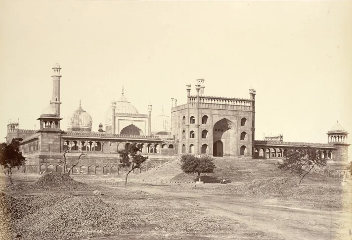
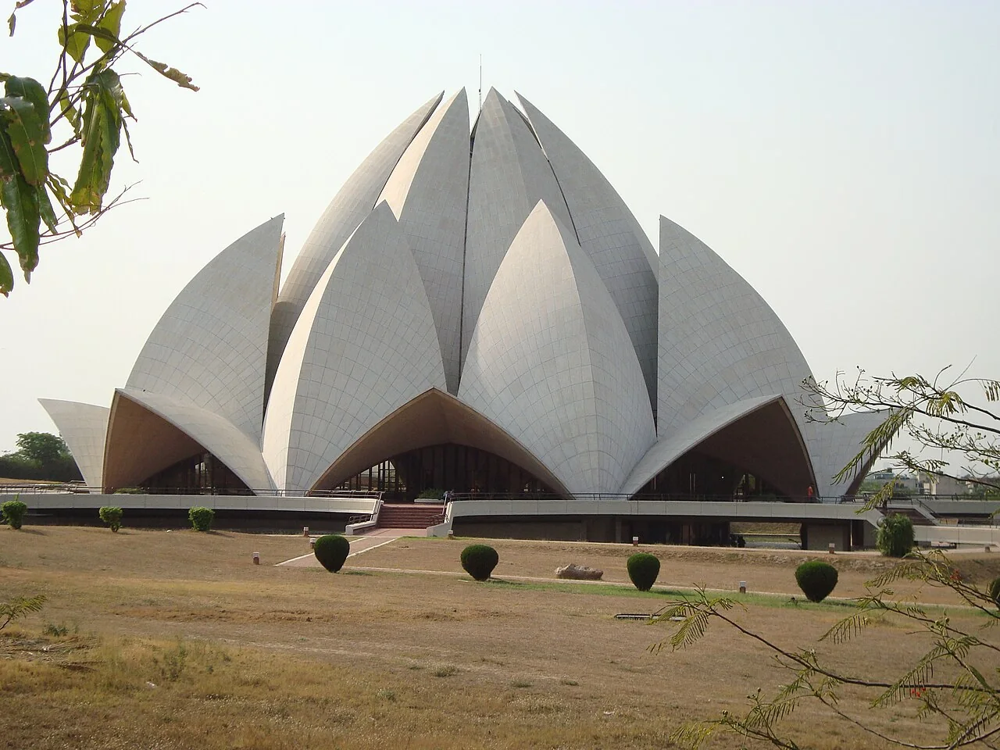

LEARNING & DISCOVERY
Explore Delhi interactively
Test your knowledge, compare historical photographs and learn useful Hindi expressions. Personal progress is saved on this device.

SELECT AN ITINERARY
Choose a visit by interest
THE DELHI SOUNDSCAPE
An illustrative city soundscape
An original, synthesised sketch of cycle bells and birdsong. It is an imaginative soundscape, not a Delhi field recording. Sound starts only when you choose.
Sound is off.
VISIT CHECKLIST
Record your experiences
THEN & NOW
Jama Masjid: historical photographs
Jama Masjid, 1860 / 2020. The same landmark, seen from different viewpoints—not a matched-perspective reconstruction or live photograph.
View photograph credits

1860 · Eugene Clutterbuck Impey2020 · Paulrichardhealy1
HINDI WORDS & EXPRESSIONS
Useful visitor vocabulary
Expressions vary by community and context. These are useful starting points, not a portrait of how everyone speaks.
THE DELHI PHOTO WALL
Delhi photography collection
A curated, credited photo collection. There are no publicly submitted photos in this edition.

